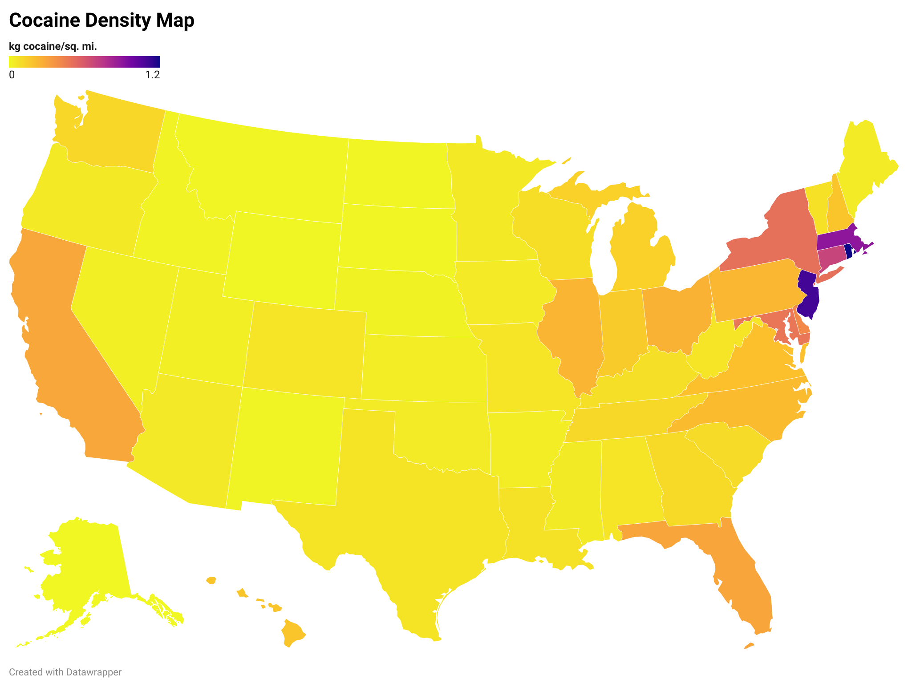
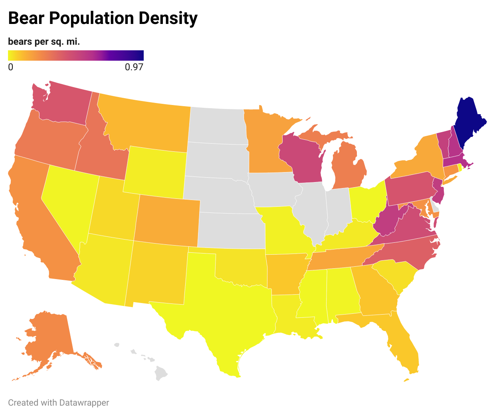
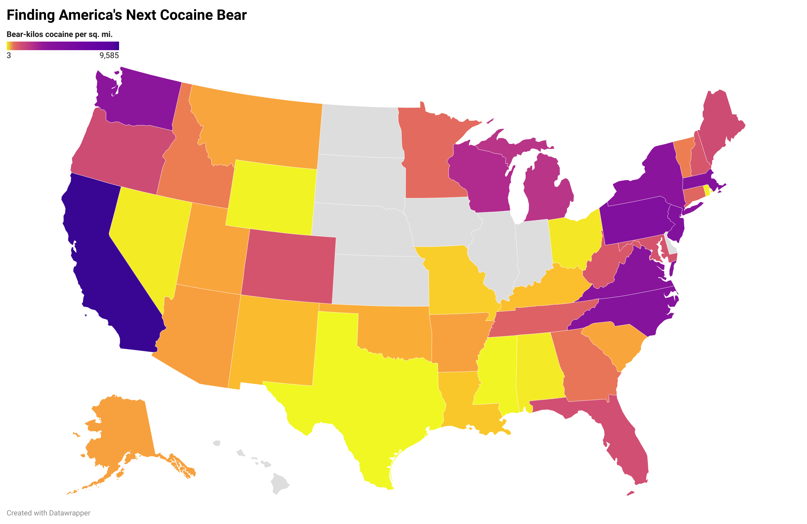

Where will the next cocaine bear arise?
The Original
In 2023 Cocaine Bear was released, a liberties-taking dramatization of a 1985 incident in which an American black bear consumed roughly 75 pounds of cocaine and quickly died. The cocaine had been dropped from an overloaded Cessna flying over the Chattahoochee National Forest in northern Georgia.
The bear was found a few months later and stuffed. It ended up in a Kentucky mall.

As far as this ursinologist knows, no other bear has ever been observed to get hooked on blow. Of course, this could change eventually. I'm interested in the where. Which state in the Union is the most likely to host the next cocaine bear?
Research
The way I see it, the question concerns the likelihood of a wild bear coming into contact with any cocaine. To experience a high that isn't instantly fatal would only require an amount of cocaine on the order of what human users consume. Kilos and kilos would just be overkill. Note that I'm only looking at wild bears. If a zoo bear was given some snow it would be more of a Harambe incident.
First I needed to get numbers for the amount of cocaine in each state. I expected the DEA or somebody at least to publish estimates, but I found zilch. So I settled on multiplying the percent of the population that used cocaine in 2019 from here by the state's population to get the number of cocaine users per state. Assuming a uniform average of 42 grams/year/user consumed (I got this from a UN factsheet but lost the link), we can divide by land area and get this map of cocaine consumption density. (You can click on these maps to go to an interactive version.)
At the state level, we see small, dense states like Rhode Island and New Jersey leading the pack.
Next, I had to find the bear population density of each state. This was easier since several people on the Internet apparently enjoy posting bear stats. I averaged the high and low estimates from here and here for black bears and got brown and polar bear numbers off Wikipedia since each they are found in only 4 and 1 state(s) respectively. Nine states (+DC) have no black bears: Delaware, Hawaii, Illinois, Indiana, Iowa, Kansas, Nebraska, North Dakota, and South Dakota. As a rule of thumb, if a state cannot support black bears it cannot support brown bears or polar bears. No cocaine bear is going to arise in the wild from one of those states.
Alaska unsurprisingly blows all the other states out of the water with a whopping ~130k bears. Here's the thing about Alaska: it's enormous. If we look at bear population density, it doesn't come out on top. Neither does Cali, with the second-most bears (33k). In fact, it's Maine that wins this round at roughly one bear per square mile!
Gray indicates no known bears.
Results
All that's left is to multiply the bear density by the cocaine density to get the bear-cocaine interaction density map.
This analysis suggests that California is the state most likely to have a cocaine bear incident in the future. It has a lot of bears and a lot of cocaine. A more detailed analysis would consider the different places humans and bears live and try to find the places they live together at highest density. Additionally, the cocaine density side of the formula only considers end users. The original cocaine bear was a victim of drug trafficking. Numbers on cocaine trafficking volumes are very hard to come by since it's illegal. More research is needed.